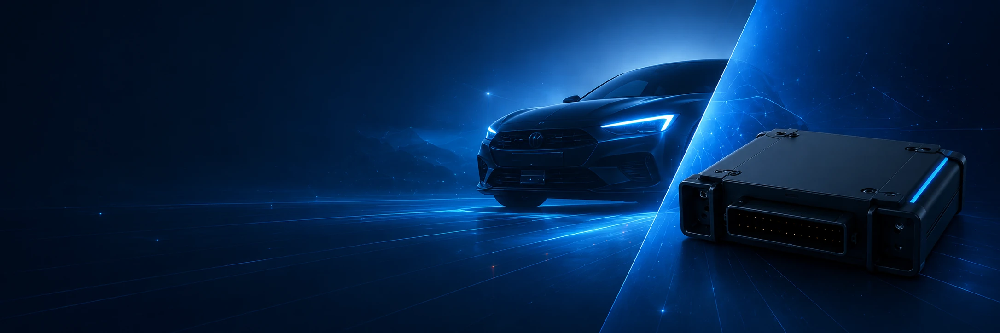

ECU / TCU Programming
Soluzioni professionali per lavorare sulle centraline elettroniche attraverso strumenti dedicati.
Sviluppiamo strumenti hardware e software dedicati alla programmazione, gestione, analisi e verifica delle centraline elettroniche, con prodotti pensati per professionisti del settore.

Le nostre soluzioni Automotive combinano programmazione, tuning, diagnosi e aggiornamento continuo degli strumenti.
Soluzioni professionali per lavorare sulle centraline elettroniche attraverso strumenti dedicati.
Software dedicato all'analisi e alla gestione delle mappe ECU e delle funzioni disponibili.
Strumenti software per supportare l'analisi e la verifica delle centraline elettroniche supportate.
Nuove versioni, compatibilità e funzionalità per mantenere gli strumenti sempre evoluti.
Quattro prodotti con funzioni diverse, progettati per accompagnare il lavoro quotidiano dei professionisti automotive.

Sistema professionale hardware e software per la programmazione di ECU e TCU.

Software professionale dedicato al remapping e alla gestione delle mappe ECU.

Soluzioni software dedicate alla gestione delle funzioni disponibili sulle ECU supportate.

Software professionale per diagnosi e verifica delle centraline elettroniche supportate.
L'offerta Turrin copre momenti differenti del lavoro sulle centraline elettroniche: programmazione, analisi, tuning, diagnosi e verifica.
Hardware e software dedicati alla gestione delle ECU / TCU.
Strumenti software pensati per lavorare sui dati e sulle mappe.
Funzioni dedicate alle operazioni disponibili sulle ECU supportate.
Supporto software alla diagnosi e al controllo delle centraline.
L'Automotive Technologies non è composta solo dai prodotti: aggiornamenti, assistenza e sviluppo continuo fanno parte dell'esperienza Turrin.
Contattaci per informazioni sui prodotti, sulle funzionalità disponibili e sulle soluzioni Automotive Turrin.